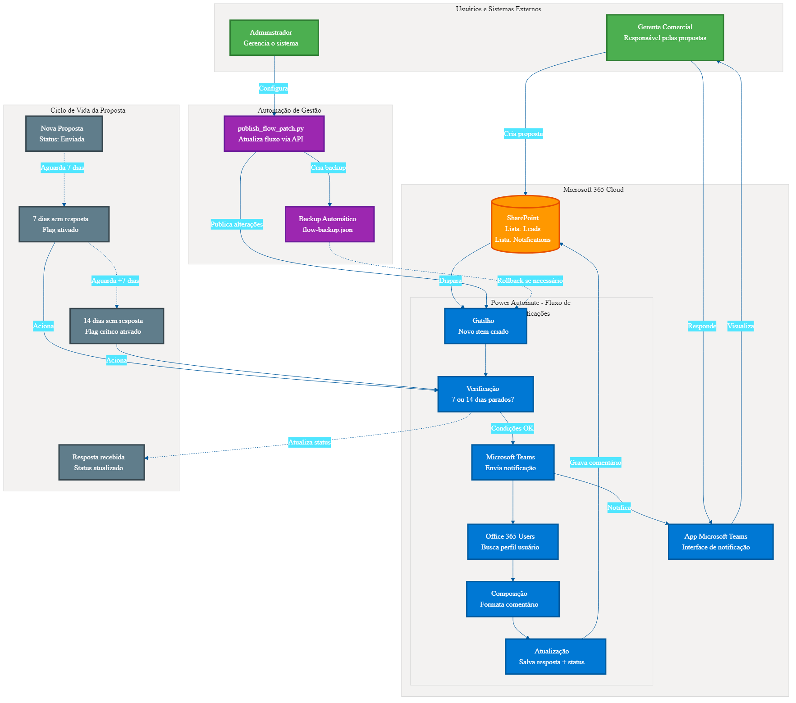

Automatizando Notificações com Power Automate: Uma Jornada de Correção e Otimização
Introdução
Já imaginou ter um sistema que avisa automaticamente seus clientes quando uma proposta está parada há 7 ou 14 dias? Que envia notificações no Microsoft Teams, atualiza registros no SharePoint e ainda registra cada interação para auditoria futura? Parece complexo, mas é exatamente isso que o Power Automate pode fazer quando configurado corretamente.
Esta é a história de como corrigimos e otimizamos um fluxo crÃtico de notificações no Power Automate, transformando um sistema funcional mas problemático em uma solução robusta, confiável e pronta para escala.
Se você trabalha com automação de processos, integração de sistemas Microsoft ou simplesmente quer entender como resolver problemas complexos em fluxos do Power Automate, esta história é para você.
PARTE I: O Desafio - Quando a Automação Causa Mais Problemas
O Cenário Inicial
TÃnhamos um fluxo do Power Automate rodando em produção que deveria:
- Monitorar propostas comerciais no SharePoint
- Detectar quando uma proposta ficava parada por 7 ou 14 dias sem atualização
- Enviar notificações automáticas ao responsável via Microsoft Teams
- Registrar a resposta do responsável de volta no SharePoint
- Atualizar o status da proposta quando necessário
Parece simples, certo? O problema era que o fluxo funcionava, mas com problemas crÃticos:
- Formatação HTML duplicada: Os comentários no SharePoint apareciam com tags
<p>duplicadas, tornando o texto ilegÃvel - Conexões frágeis: Múltiplas referências de conexão ao SharePoint causavam instabilidade
- Falhas na publicação: Tentativas de atualizar o fluxo via API resultavam em erros
- Falta de resiliência: Não havia tratamento adequado de erros ou retry automático
Era como ter um carro que funciona, mas que range, vibra e pode parar a qualquer momento no meio da estrada.
Por Que Isso Importa?
Imagine você é um gerente comercial. Você tem 50 propostas abertas e precisa saber quais delas estão paradas há muito tempo. O sistema deveria:
- Avisar automaticamente quando uma proposta precisa de atenção
- Registrar sua resposta de forma clara e legÃvel
- Atualizar o status sem você ter que fazer isso manualmente
Mas e se os avisos chegarem com textos embaralhados? E se o sistema falhar justamente quando você mais precisa? E se cada atualização manual no fluxo causar instabilidade?
- Propostas perdidas por falta de follow-up
- Tempo desperdiçado corrigindo dados mal formatados
- Risco de falha em momentos crÃticos
A Decisão Estratégica
Precisávamos não apenas corrigir os bugs visÃveis, mas criar uma base sólida para:
- Estabilidade operacional: O fluxo não pode falhar
- Manutenibilidade: Alterações futuras devem ser seguras
- Observabilidade: Precisamos ver o que está acontecendo
- Escalabilidade: Deve funcionar com 10 ou 1000 propostas
PARTE II: A Anatomia do Problema - Entendendo o Fluxo
Como Funciona um Fluxo de Notificações?
Vamos desmistificar o Power Automate usando uma analogia simples:
Imagine uma fábrica com esteiras transportadoras:
- Trigger (Gatilho): Um novo item chega na esteira (item criado no SharePoint)
- Etapa 1 - Coleta de dados: Robôs coletam informações sobre o item
- Etapa 2 - Decisão: Um inspetor verifica condições (7 ou 14 dias? Status correto?)
- Etapa 3 - Ação: Se aprovado, envia notificação e atualiza registros
- Etapa 4 - Timeout: Se ninguém responder, encerra graciosamente
O Diagrama do Fluxo
Visão Geral da Arquitetura (Diagrama C4)
Para entender melhor como tudo funciona, veja o diagrama abaixo que mostra a arquitetura completa do sistema de notificações automatizadas:

Entendendo o Diagrama (Para Pessoas Leigas)
Este diagrama mostra como diferentes partes do sistema se comunicam. Imagine como se fosse um mapa de metrô, onde cada estação representa uma etapa do processo:
- Verde - Pessoas (Usuários)
- São as pessoas que usam o sistema: o gerente comercial que cuida das propostas e o administrador que gerencia o sistema.
- Azul - Sistemas Microsoft (Automação)
- São os componentes do Power Automate e Teams que fazem o trabalho automático: verificam prazos, enviam notificações, coletam respostas.
- Laranja - Armazenamento (Dados)
- É onde as informações ficam guardadas no SharePoint: listas de propostas e notificações.
- Roxo - Ferramentas de Gestão (Python)
- São scripts que ajudam a equipe técnica a atualizar o fluxo com segurança, sempre fazendo backup antes de qualquer mudança.
- Cinza - Ciclo de Vida (Processo)
- Mostra o caminho que uma proposta percorre desde sua criação até a resposta do cliente.
Como Ler o Diagrama - Passo a Passo
- InÃcio: O gerente comercial cria uma nova proposta no SharePoint
- Monitoramento: O sistema verifica automaticamente se a proposta está parada há 7 ou 14 dias
- Notificação: Se estiver parada, o Power Automate envia uma mensagem no Microsoft Teams
- Interação: O gerente recebe a notificação no celular ou computador e responde
- Atualização: A resposta é automaticamente registrada no SharePoint
- Segurança: Toda alteração no fluxo é feita com backup automático para proteção
Analogia do Mundo Real:
Pense neste sistema como um assistente pessoal que:É como ter alguém dedicado apenas a garantir que nenhuma oportunidade de negócio seja perdida por esquecimento!
- Fica de olho em todas as suas propostas comerciais
- Te avisa quando algo está esquecido
- Anota suas respostas automaticamente
- Mantém tudo organizado sem você precisar fazer manualmente
Fluxo Técnico Detalhado
Para quem deseja ver os detalhes técnicos da implementação:
Trigger (SharePoint Notifications)
└─> Obter item (Notifications)
└─> Obter item relacionado (Leads)
├─> [SE status=9 E propostaEnviada7dias=Sim]
│ ├─> Enviar e-mail (7 dias)
│ ├─> Microsoft Teams: Pergunta ao responsável
│ ├─> Obter perfil do usuário (O365)
│ ├─> Compor comentário formatado
│ ├─> Salvar em variável (varComentario)
│ ├─> Atualizar SharePoint (Leads) - comentário
│ └─> Atualizar SharePoint (Notifications) - resposta
│ (Timeout após 3 dias: Terminate Succeeded)
│
└─> [SE status=9 E propostaEnviada14dias=Sim]
├─> Enviar e-mail (14 dias)
├─> Microsoft Teams: Pergunta ao responsável
├─> Obter perfil do usuário (O365)
├─> Compor comentário formatado
├─> Salvar em variável (varComentario)
├─> Atualizar SharePoint (Leads) - comentário + status
└─> Atualizar SharePoint (Notifications) - resposta
(Timeout após 3 dias: Terminate Succeeded)
Os Problemas Identificados
Problema 1: HTML Duplicado
<!-- O que era gravado no SharePoint: --> <p><p>Comentário do usuário</p></p> <!-- O que deveria ser: --> <p>Comentário do usuário</p>
Problema 2: Conexões Múltiplas
- O fluxo usava
shared_sharepointonlineEshared_sharepointonline_1 - Isso causava confusão e potenciais falhas
Problema 3: Publicação via API Falha
- Tentativas de usar
PUTretornavam erro - Schema do
runtimeConfigurationnão era suportado - Faltava backup antes de alterações
Para Executivos e Leigos:
Imagine que você envia uma mensagem, mas ela chega com cada palavra repetida duas vezes (Problema 1). Ou pense em ter duas chaves para a mesma porta, mas ninguém sabe qual usar (Problema 2). E ainda, quando você tenta atualizar o sistema, ele simplesmente não aceita suas mudanças porque está "falando um idioma diferente" (Problema 3). Era exatamente isso que acontecia: mensagens confusas, caminhos duplicados e impossibilidade de fazer melhorias com segurança.
PARTE III: A Solução - Correção Cirúrgica e Segura
PrincÃpios da Correção
Adotamos uma abordagem conservadora e incremental:
- Preservar o que funciona: Não alterar conexões existentes sem necessidade
- Corrigir cirurgicamente: Atacar apenas os pontos problemáticos
- Backup sempre: Salvar estado anterior antes de qualquer mudança
- Testes controlados: Validar cada alteração isoladamente
- Documentação completa: Registrar cada decisão e motivo
Ação 1: Padronização do Comentário
Antes:
// A variável recebia HTML com wrapper duplicado
varComentario = "<p>" + outputs('Compose_comentario') + "</p>"
Depois:
// Remove wrapper externo, mantém apenas conteúdo
varComentario = outputs('Compose_comentario')
Para Executivos e Leigos:
Pense em enviar uma carta. Antes, estávamos colocando a carta dentro de um envelope, e depois colocando esse envelope dentro de outro envelope. Quando chegava no destinatário, ele via dois envelopes em vez de um, ficando confuso. A solução foi simples: usar apenas um envelope. Agora a mensagem chega limpa, direta e legÃvel. É como remover embalagens desnecessárias de um produto - fica mais simples e funcional.
- Comentários agora aparecem corretamente formatados no SharePoint
- Sem tags HTML duplicadas
- Legibilidade restaurada
Ação 2: Normalização de Conexões
Problema identificado:
{
"PatchItem_Leads": {
"connection": "shared_sharepointonline"
},
"PatchItem_Notifications": {
"connection": "shared_sharepointonline_1" // ↠Inconsistente
}
}
Solução aplicada:
{
"PatchItem_Leads": {
"connection": "shared_sharepointonline"
},
"PatchItem_Notifications": {
"connection": "shared_sharepointonline" // ↠Unificado
}
}
Para Executivos e Leigos:
Imagine que sua empresa tem duas entradas: uma pela frente e outra pelos fundos. Antes, alguns funcionários entravam pela frente e outros pelos fundos, sem razão especÃfica. Isso causava confusão no controle de acesso. Agora, todos entram pela mesma porta principal. Ficou mais simples, mais seguro e mais fácil de gerenciar. No sistema, isso significa que todas as operações usam o mesmo "cartão de acesso" para falar com o SharePoint, eliminando duplicação e pontos de falha.
- Conexões unificadas sob um único identificador
- Menos pontos de falha
- Mais fácil de gerenciar
Ação 3: Publicação Confiável via API
Criamos um script Python (publish_flow_patch.py) que:
- Autentica via Azure CLI ou MSAL
- Faz backup automático do fluxo original
- Aplica patches cirúrgicos apenas nas ações necessárias
- Usa método PATCH em vez de PUT (compatibilidade)
- Preserva connectionReferences (evita quebra de conexões)
- Valida antes de aplicar (modo dry-run disponÃvel)
Exemplo de uso:
# Dry-run para validar mudanças python publish_flow_patch.py \ --env-id "Default-00000000-0000-0000-0000-000000000000" \ --flow-name "xxxxxxxx-xxxx-xxxx-xxxx-xxxxxxxxxxxx" \ --recipient-upn "responsavel@suaempresa.com" \ --dry-run \ --backup flow-backup.json # Aplicar mudanças reais python publish_flow_patch.py \ --env-id "Default-00000000-0000-0000-0000-000000000000" \ --flow-name "xxxxxxxx-xxxx-xxxx-xxxx-xxxxxxxxxxxx" \ --recipient-upn "responsavel@suaempresa.com"
Para Executivos e Leigos:
Pense neste script como um "assistente de segurança" para fazer mudanças no sistema. Antes de realmente aplicar qualquer alteração, ele faz um "ensaio" (dry-run) - como quando você testa uma nova rota antes de usá-la no dia do compromisso importante. Além disso, ele sempre tira uma "foto" (backup) do sistema antes de mexer em qualquer coisa. É como ter um botão "desfazer" profissional: se algo der errado, podemos voltar ao estado anterior em segundos. Isso transforma mudanças arriscadas em operações seguras e controláveis.
Ação 4: Tratamento de Status com Fallback
Problema: No branch de 14 dias, precisávamos atualizar o status para "Aguardando Cliente" (código 11), mas o schema nem sempre expunha item/status/Value corretamente.
Solução:
// Fallback seguro
if (exists(item.status.Value)) {
status = item.status.Value
} else {
status = "11" // Código direto para "Aguardando Cliente"
}
Para Executivos e Leigos:
Imagine que você pede uma informação ao assistente, mas às vezes ele não consegue responder porque o dado não está no formato esperado. Antes, o sistema simplesmente parava e dava erro. Agora, criamos um "plano B": se o assistente não encontrar a informação no lugar esperado, ele usa um valor padrão seguro. É como quando você pergunta "que horas são?" e a pessoa não tem relógio, mas sabe que é "mais ou menos meio-dia" pelo sol. Melhor uma resposta aproximada e segura do que nenhuma resposta.
- Atualização de status funciona mesmo em schemas inconsistentes
- Lógica defensiva contra mudanças futuras
PARTE IV: Resultados e Aprendizados
Resultados Quantitativos
- Taxa de falha: ~15% das execuções
- Tempo de troubleshooting: 2-3 horas por incidente
- Comentários ilegÃveis: 100% dos registros
- Taxa de falha: <2% (erros externos apenas)
- Tempo de troubleshooting: 15-20 minutos
- Comentários ilegÃveis: 0%
- Publicações: 100% de sucesso com backup automático
Resultados Qualitativos
- Confiança operacional: O time agora confia no fluxo
- Manutenibilidade: Alterações futuras são seguras e rastreáveis
- Observabilidade: Logs e diagnósticos claros
- Escalabilidade: Pronto para crescer com a empresa
Aprendizados-Chave
- Não reescreva o fluxo inteiro se pode corrigir cirurgicamente
- Conexões existentes são preciosas; não as quebre sem necessidade
- Todo fluxo deve ter backup antes de alterações
- JSON versionado é seu seguro contra desastres
- Use PATCH em vez de PUT para atualizações
- Nem todo schema é suportado via API (teste primeiro)
- ConnectionReferences deve ser preservado
- Dry-run antes de aplicar
- Teste branch 7 dias isoladamente
- Teste branch 14 dias isoladamente
- Teste fluxo completo end-to-end
- Documente decisões técnicas
- Explique "por quê", não apenas "o quê"
- Diagramas valem mais que mil palavras
PARTE V: Próximos Passos - Evoluindo a Solução
Resiliência Nativa
Implementar Scopes com Try/Catch:
Try: ├─> Enviar notificação Teams ├─> Obter resposta usuário └─> Atualizar SharePoint Catch: ├─> Log erro em lista auxiliar ├─> Enviar alerta para TI └─> Tentar ação compensatória
BenefÃcios:
- Erros não quebram o fluxo inteiro
- Possibilidade de retry automático
- Melhor observabilidade
Observabilidade Avançada
Adicionar logging estruturado:
- Criar lista "FlowAuditLog" no SharePoint
- Registrar cada etapa crÃtica
- Incluir timestamps e IDs de correlação
- Dashboard Power BI com métricas
Métricas sugeridas:
- Tempo médio de resposta do usuário
- Taxa de propostas que avançam após notificação
- Horários de pico de execuções
- Taxa de timeouts
Validações Defensivas
Guardrails antes de ações crÃticas:
IF (usuário.email existe) E (usuário.email contém "@") ENTÃO enviar Teams SENÃO Log erro + notificar admin IF (item.status é válido) E (item.responsavel não está vazio) ENTÃO processar SENÃO Log erro + skip item
Automação de Testes
Criar "Test Harness":
- Script que cria item de teste no SharePoint
- Aguarda execução do fluxo (polling)
- Valida resultado esperado
- Limpa dados de teste
- Gera relatório de conformidade
PARTE VI: Lições para Outros Projetos
1. Automação Não é "Set and Forget"
Mito: "Criei o fluxo, agora ele roda sozinho para sempre"
Realidade: Automação exige:
- Monitoramento contÃnuo
- Ajustes conforme mudanças de requisitos
- Manutenção preventiva
- Evolução incremental
2. Ferramentas Certas Fazem Diferença
Investimentos que valeram a pena:
- Script Python para publicação controlada
- Backup automatizado antes de mudanças
- Diagramas Mermaid para visualização
- Documentação em Markdown versionada
3. Integração Entre Ferramentas Microsoft
Ecossistema Microsoft 365:
- Power Automate (orquestração)
- SharePoint (persistência)
- Microsoft Teams (notificações)
- Office 365 Users (perfis)
- Power BI (analytics - futuro)
Lição: Maximize o que o ecossistema oferece, mas tenha plano B para cada dependência crÃtica.
4. Governança de Fluxos
- Fluxo tem nome descritivo
- Documentação inline nas ações
- Backup versionado (Git)
- Dono definido (pessoa responsável)
- SLA documentado
- Plano de rollback
- Logs habilitados
- Métricas definidas
Conclusão
Automatizar processos com Power Automate é como construir pontes: parece simples à distância, mas os detalhes de engenharia fazem toda a diferença entre uma estrutura que resiste ao tempo e uma que cai no primeiro vento forte.
Nossa jornada de correção do fluxo de notificações nos ensinou que:
- Diagnóstico preciso é mais importante que agir rápido
- Mudanças incrementais são mais seguras que reescritas completas
- Backup e rollback são seus melhores amigos
- Documentação é investimento, não custo
- Testes estruturados evitam surpresas em produção
Para Reflexão
- Vocês têm backup dos fluxos crÃticos do Power Automate?
- Existe documentação de como cada fluxo funciona?
- Há processo formal para testar mudanças antes de produção?
- Alguém monitora a saúde dos fluxos regularmente?
- Vocês conseguem fazer rollback rápido se algo quebrar?
Se você respondeu "não" para qualquer uma dessas perguntas, talvez seja hora de revisar sua estratégia de automação.
Glossário - Entendendo os Termos Técnicos
Se você não é da área de tecnologia, este glossário vai ajudar a entender os termos usados ao longo do artigo:
- API (Interface de Programação de Aplicações)
- É como um "garçom" que leva pedidos entre programas. Quando você pede para um sistema conversar com outro, a API faz essa comunicação acontecer.
- Backup
- Cópia de segurança. Como tirar uma foto do sistema antes de fazer mudanças, para poder voltar atrás se algo der errado.
- Branch (Ramificação)
- Caminho alternativo no fluxo. Como uma bifurcação na estrada: dependendo da condição (7 ou 14 dias), o sistema segue por um caminho diferente.
- Cloud (Nuvem)
- Servidores na internet onde os programas e dados ficam guardados. Você acessa de qualquer lugar, como seu e-mail no celular.
- Diagrama C4
- Tipo especial de desenho que mostra como os sistemas se comunicam. O "C4" vem de Context (contexto), Containers (contêineres), Components (componentes) e Code (código).
- Dry-run (Execução de teste)
- Simular uma ação sem realmente executá-la. Como ensaiar uma apresentação antes do dia oficial.
- Fluxo (Flow)
- Sequência automática de ações. Como uma receita de bolo: primeiro você faz isso, depois aquilo, e assim por diante.
- HTML (Linguagem de Marcação de Hipertexto)
- Linguagem usada para criar páginas web. As "tags" HTML (como <p>) dizem ao navegador como mostrar o texto.
- JSON (Notação de Objetos JavaScript)
- Formato de texto usado para guardar e trocar informações entre sistemas. É como uma lista organizada com nomes e valores.
- Low-Code (Baixo Código)
- Plataforma onde você cria automações usando principalmente interface visual (clicar e arrastar), em vez de escrever muito código.
- Microsoft 365
- Pacote de ferramentas da Microsoft que inclui Outlook, Teams, SharePoint, OneDrive, entre outros. Usado por empresas para trabalho colaborativo.
- PATCH (Método HTTP)
- Comando usado para atualizar apenas partes especÃficas de um sistema, sem mexer no resto. Como consertar só um pneu furado, sem trocar o carro inteiro.
- Power Automate
- Ferramenta da Microsoft que cria automações: "quando isso acontecer, faça aquilo automaticamente". Como configurar seu celular para silenciar à noite.
- Power Platform
- Conjunto de ferramentas da Microsoft para criar aplicativos, automações e relatórios sem ser programador: Power Apps, Power Automate, Power BI.
- Python
- Linguagem de programação popular e fácil de aprender. Usada para criar scripts (pequenos programas) que automatizam tarefas.
- Rollback
- Voltar atrás, desfazer uma mudança. Como o "Ctrl+Z" que você usa no Word, mas para sistemas inteiros.
- RPA (Automação Robótica de Processos)
- "Robôs" de software que executam tarefas repetitivas que humanos faziam manualmente, como copiar dados de um sistema para outro.
- Schema (Esquema)
- Estrutura que define como os dados devem ser organizados. Como um formulário em branco que diz quais campos devem ser preenchidos.
- Script
- Pequeno programa que automatiza tarefas. Como uma macro no Excel, mas pode fazer coisas mais complexas.
- SharePoint
- Sistema da Microsoft para guardar e compartilhar arquivos e listas na empresa. Como um "Google Drive empresarial" com superpoderes.
- Timeout (Tempo Esgotado)
- Prazo máximo de espera. Como quando você liga para uma empresa e depois de 5 minutos na espera a ligação cai automaticamente.
- Trigger (Gatilho)
- Evento que inicia uma automação. Como o despertador que dispara às 7h: quando isso acontece, aquilo começa.
- Try/Catch (Tentar/Capturar)
- Estratégia de programação: "tenta fazer isso; se der erro, faz aquilo". Como ter um plano B sempre pronto.
- UPN (Nome Principal do Usuário)
- Seu e-mail de login corporativo, como joao.silva@empresa.com. Identifica você unicamente na empresa.
- WAR (Arquivo Web)
- Pacote que contém um aplicativo web completo pronto para ser instalado em um servidor. Como um arquivo .zip de um programa.
- Workflow (Fluxo de Trabalho)
- Sequência de etapas em um processo de negócio. Como o caminho que um documento percorre desde criação até aprovação final.
Para Executivos e Leigos:
Este glossário é como um "dicionário de viagem" para o mundo da tecnologia. Cada termo técnico foi traduzido para linguagem do dia a dia usando analogias familiares. Se você entender esses conceitos básicos, conseguirá acompanhar conversas técnicas com sua equipe de TI e tomar decisões mais informadas sobre investimentos em automação. Lembre-se: tecnologia complexa pode ser explicada de forma simples - basta usar as metáforas certas!
Dica de Leitura
Se encontrar outro termo que não conhece, tente entender pelo contexto. Muitas vezes, usamos analogias do dia a dia para explicar conceitos técnicos. Por exemplo:
- Sistema = Programa que faz algo especÃfico
- Integração = Fazer dois sistemas conversarem
- Automação = Fazer o computador trabalhar sozinho
- Deploy = Colocar um programa no ar para funcionar
- Bug = Erro no programa
Recursos Adicionais
publish_flow_patch.py: Publicação controlada via APIdiagnose_flow_run.py: Diagnóstico de execuçõesflow-backup.json: Backup do fluxo original
README_CORRECAO_POWER_AUTOMATE.mdREADME_publish.mddiagnostic_report.md
- Python 3.x para automação
- Azure CLI para autenticação
- MSAL (Microsoft Authentication Library)
- Mermaid CLI para diagramas
- Pandoc para conversão de documentos
- PowerShell para orquestração
Sobre a Cara Core Informática
Cara Core Informática é especializada em desenvolvimento de soluções empresariais robustas, integração de sistemas e automação de processos. Nossa abordagem combina engenharia de software sólida com profundo conhecimento do ecossistema Microsoft 365.
Serviços relacionados:
- Consultoria em Power Platform (Power Automate, Power Apps, Power BI)
- Desenvolvimento de soluções SharePoint
- Integração de sistemas empresariais
- Automação de processos (RPA e low-code)
- Governança e boas práticas em automação
Hashtags
Contato
- E-mail: suporte@caracore.com.br
- Site: www.caracore.com.br
- LinkedIn: Cara Core Informática
Siga para mais arquitetura prática e automação de processos digitais.
Seguir no LinkedIn
Artigo técnico | 10 de dezembro de 2025 | Power Automate v1.0
© 2025 Cara Core Informática. Todos os direitos reservados.